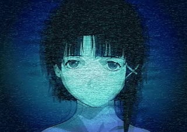

| Name | Lain Iwakura |
| Age | 14 |
| Sex | Female |
| Hair color | Brown |
| Eyes color | Brown |
| Hobby | The Wired |
Lain Iwakura is the shy and introverted protagonist of "Serial Experiments Lain." Initially appearing as an ordinary junior high school student living a quiet life with her family, her existence takes a surreal turn after the suicide of a classmate. Lain begins to explore the "Wired," a global communications network similar to the internet but far more immersive and pervasive.
As she delves deeper into the digital realm, Lain discovers that she possesses an uncanny aptitude for technology and the Wired itself. She starts to develop multiple personalities: the shy "Physical Lain," the bold and cynical "Wired Lain," and a mysterious third entity. Her journey is one of self-discovery, questioning the boundaries between the physical world and the digital consciousness.
It is eventually revealed that Lain is not merely a human girl but a program given human form—an omnipresent entity designed to break the barrier between the Wired and the real world. She exists everywhere and nowhere, a god-like figure in the digital age, yet she struggles with the very human emotions of loneliness and the desire for connection.
Ultimately, Lain must choose her own path: to remain part of the human world she has come to love, or to embrace her destiny as the consciousness of the Wired. Her story is a haunting exploration of identity, reality, and the ways in which technology connects and isolates us all. No matter where you are, everyone is always connected.